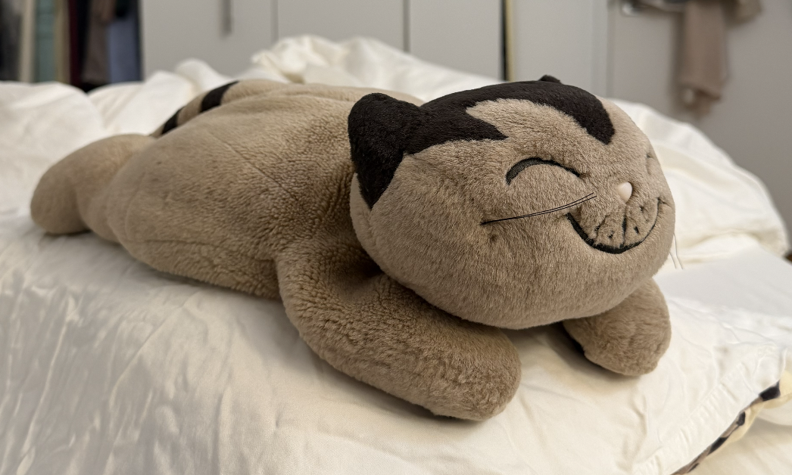
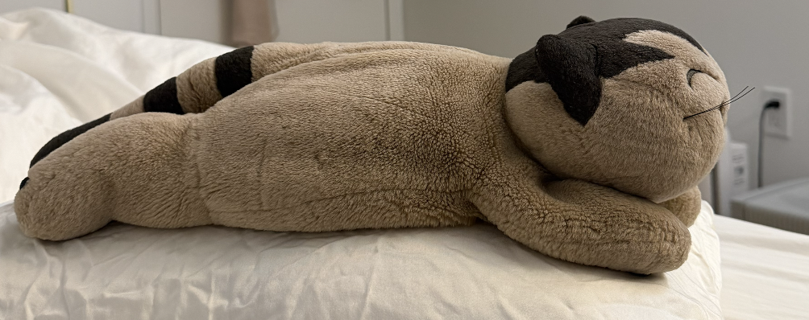

Kittie's short legs
Courtyard pilot design brief, 3 October 2026. The user approved implementation. This document reviews the current source art and proposes native edits. Revised artwork and gameplay still need independent review.
The current feet read as small blocks because each limb is a closed rounded rectangle with a nearly uniform width and a horizontal upper border. The photographs show short, soft limbs that flow out of the body, bend gently, and end in low rounded paws. The first change should be that connection and taper.
Reference observations


I inspected both original photographs in the owner's asset folder, plus the current 40 × 32 frames at native size and 4×. Both untouched project copies shown above match their recorded SHA-256 hashes. The photos are authoritative for anatomy; the sprite supplies the approved native face and motion constraints.

Proposed native silhouette
Keep the 40 × 32 canvas, face layer, origin, tail attachment, and ground anchor. Draw the near legs as deliberate polygons instead of calling the shared rounded-rectangle paw helper. Coordinates below refer to the current right-facing neutral frame, with x = 0 at the left edge and y = 0 at the top.
| Area | Change | Read at native size |
|---|---|---|
| Near foreleg | Replace the block at x25–32, y25–31. Keep the attachment beneath the cheek, around x26–29, y25–27. Narrow the visible upper leg to 3–4 pixels including outline. Let it angle forward by 1–2 pixels into a low toe around x28–33, y29–31. Use a stepped curved end with clipped corner pixels and a 3–4 pixel contact run. The paw's visible height should be about 3 pixels, rather than a 7-pixel block. | A short attached leg with a broad soft toe. The upper edge must merge into the shoulder instead of forming a closed dark box beneath the face. |
| Near hind leg | Replace the block at x11–17, y25–31. Keep the rounded haunch at x12–17, y25–28, then narrow the lower segment to 3–4 pixels around x11–14, y28–30. Sweep its toe slightly backward, toward x9–14, y30–31. Open the upper contour into the torso and use a short inner crease to describe the bend. Keep a clipped lower corner and a short flat contact run. | A soft haunch tapering into a short rearward leg. Avoid a second square placed over the body. |
| Far legs | Keep the far forepaw behind the cheek and the far hind paw behind the belly. Reduce their exposed widths by one pixel where needed. Give each a small offset from the near leg and one clear background notch between visible feet. Do not outline a complete far-leg box through the body. | Two depths of limbs, with the near leg taking precedence. A far toe may be partly hidden. |
| Body height | First keep the current torso height. Its underside already reaches y29 while the near soles reach y31. If the tapered legs leave an unwanted arch, lower only the belly's middle underside by one pixel. Keep the shoulder, face, tail root, top of back, and sole anchors fixed. | A low plush body. Lowering the whole sprite or pushing the entire torso farther down would consume the remaining leg space. |
| Color and contour | Use the torso's taupe for every paw. Keep one-pixel outlines and a small 1–2 pixel highlight on each visible near limb. Remove the long horizontal highlight on a square paw if it reads as an inset panel. Preserve the existing palette. | The limbs belong to the same plush. No pale ball-shaped front paw, double-thick knee seam, or noisy highlights. |
The coordinate ranges are a starting silhouette, not permission to overwrite protected face pixels. The builder should choose the final single-pixel steps after viewing the complete character at 1×. Preserve the dark crown, closed embroidered eyes, pale nose, stitched grin, horizontal oval face, and substantial chin exactly.
A little more life
Keep the existing 16-frame order and approved back carry and cuddle behavior. Use the four walking frames for a clearer contact, lift, opposite contact, and lift sequence. In each lift frame, raise only the swinging toe by one pixel and rotate its short ankle through a one-pixel contour change; let the planted leg retain its contact height. In contact frames, a one-pixel knee bend should connect the paw to the body. Check the existing approximately eight-tick step cadence before changing speed.
Keep the face fixed during idle and reactions. The existing tail motion and one-pixel belly breath are enough for the pilot. Strengthen the pleased pose only through a small shoulder or forepaw weight shift if it remains clearly grounded. Do not add blinking, a new mouth, more tail amplitude, or a bounce to every step. Carry and cuddle are the liveliest existing behaviors and should stay recognizable.
Apply the new leg anatomy consistently to walking, reach, follow-through, and air tuck. The cuddle's hand placement and ball space remain protected. Any hind-leg cleanup within cuddle frames must leave the forepaw shapes, face pixels, and wool path intact.
Validation before human review
- Compare original front and side photos with neutral, both contact poses, both lift poses, reach, air tuck, and all four cuddle frames. Review at 1× first and nearest-neighbor 4× second.
- At 1×, identify the near foreleg's attachment, narrower upper segment, and toe without zooming. The hind leg must flow out of the haunch. Reject detached paws, matching box feet, a tall standing stance, or a belly that hides every leg.
- Compare every protected face pixel with the existing sprite. Keep the 40 × 32 frame size, palette, origin, one-pixel contours, and stable soles. Inspect both mirrored directions.
- Loop idle, walking, swat, and rest transitions at game speed and half speed. The planted foot must not jump vertically. Toes must not blink away between frames. Check tail-root attachment and the return from airborne tuck.
- Check actual native gameplay on the courtyard's light and dark ground, under the UI, during jumps and landing, with wool on the back and through the whole idle cuddle. Source PNGs alone do not establish the result in game.
- Recount compiled tile and sprite use after changes. The current source manifest reports 41 unique 8 × 16 pairs and at most five Kittie hardware objects on a scanline. Confirm the game's overall native budget with active actors.
Independent art review should judge the revised native frames and motion after the builder's checks. Keep the current contact sheet as the before comparison and label source previews separately from captured gameplay.